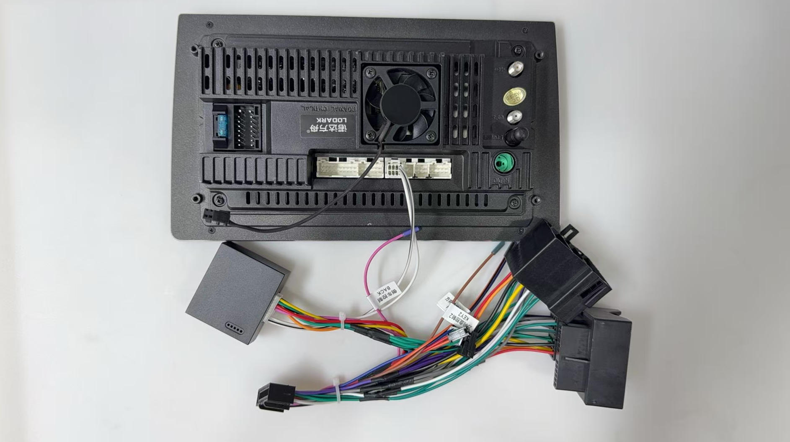

How to Install & Setup Canbus / Steering Controls
Proper installation of the Canbus adapter is crucial for ensuring your LODARK head unit works seamlessly with your vehicle's steering wheel controls and other integrated systems. This comprehensive guide will walk you through the entire process step by step.
What is a Canbus Adapter?
A Canbus (Controller Area Network Bus) adapter is an interface module that allows your LODARK head unit to communicate with your vehicle's existing electronic systems. It enables features like:
- Steering wheel control functionality
- Vehicle information display (speed, RPM, etc.)
- Door open status indicators
- Reverse camera activation
- Parking sensor integration
Note: Before starting the installation, ensure you have the correct Canbus adapter for your specific vehicle model. LODARK provides vehicle-specific adapters for most car models.
Installation Steps
Before beginning, make sure you have all the necessary tools and components:
- LODARK head unit
- Vehicle-specific Canbus adapter
- Wire harness connectors
- Trim removal tools
- Screwdrivers (various sizes)
- Wire strippers/crimpers
- Electrical tape
- Zip ties for cable management
For safety, always disconnect the negative terminal of your vehicle's battery before beginning any electrical work. This prevents short circuits and potential damage to your vehicle's electronics.
Warning: Never work on your vehicle's electrical system with the battery connected. This can cause serious damage to both your vehicle and the LODARK head unit.
Carefully remove the trim panels around your factory head unit using trim removal tools. Once the trim is removed, unscrew and gently pull out the factory head unit.
Disconnect all cables from the back of the factory unit, taking note of their positions for reference during installation.
Connect the Canbus adapter to the LODARK head unit using the provided connectors. The connection is typically made through the dedicated Canbus port on the back of the head unit.

Then, connect the other end of the Canbus adapter to your vehicle's wiring harness. Make sure all connections are secure.
Tip: Most LODARK Canbus adapters are plug-and-play, requiring no additional wiring or modifications. Simply connect the adapter between the head unit and your vehicle's harness.
Once the physical connections are complete, it's time to program your steering wheel controls:
- Reconnect the vehicle battery
- Turn on the LODARK head unit
- Navigate to Settings > Factory (the passcode is usually 3368 or 1234).
- Select "Car Model."
- Select the CAN Box type based on the CANbus box.
- Select the car make, model, year, and trim level.
Before reassembling everything, test all functions to ensure they're working correctly:
- Test each steering wheel control button
- Check if vehicle information is displayed correctly
- Test the reverse camera activation (if applicable)
- Verify door status indicators work
- Ensure all audio functions work properly
Note: If any functions aren't working correctly, double-check all connections and refer to the troubleshooting section below.
Once you've confirmed everything is working properly:
- Carefully tuck all wires and connectors behind the head unit
- Secure the LODARK head unit in place with the provided brackets
- Reattach all trim panels
- Do a final check of all functions
Troubleshooting Common Issues
Steering Wheel Controls Not Working
If your steering wheel controls aren't functioning:
- Verify the Canbus adapter is properly connected
- Check if you have the correct Canbus adapter for your vehicle
- Re-enter the steering wheel control learning process
- Try resetting the Canbus adapter by disconnecting and reconnecting power
No Vehicle Information Display
If vehicle data isn't appearing on your head unit:
- Ensure the Canbus adapter is properly connected to both the head unit and vehicle harness
- Check if your specific vehicle model supports the information display feature
- Verify the Canbus adapter is compatible with your vehicle's model year
Reverse Camera Not Activating
If your reverse camera doesn't activate when shifting into reverse:
- Check the reverse trigger wire connection
- Verify the camera itself is functioning
- Ensure the camera video cable is properly connected to the head unit